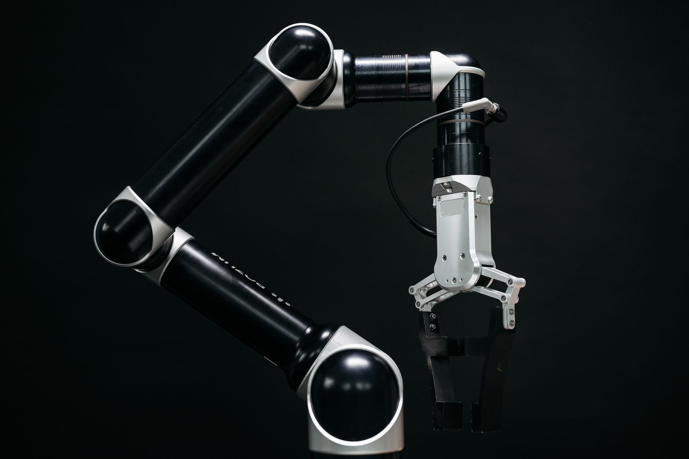

The cell that shook itself out of tolerance
CASE 01 · TUNING- Client
- Packaging machinery OEM
- Machine
- 4-axis pick-and-place cell
- Year
- 2024
- Duration
- 2-day audit + 6 days tuning
- Status
- Complete
The brief
A pick-and-place cell placing lids at a 0.85-second cycle had drifted to ±0.4 mm placement scatter against a ±0.05 mm specification, and the line was stopping twice a shift on placement faults. The drift had started after a gripper change. Three service visits had re-taught positions and swapped a drive; nothing held for more than a week.
The decisions
Measure first. I logged the following error at the drive's trace rate across full production cycles before touching a parameter. Two facts fell out of the trace. The new gripper was heavier: load inertia had risen until the inertia ratio went from roughly 3:1 to roughly 9:1, while the gains were still the ones tuned for the old gripper. And the gantry had a structural resonance at 38 Hz that the move profile's acceleration steps excited on every cycle — the axis arrived, rang at 38 Hz, and placed the part wherever the ringing had got to.
So: gains re-derived for the real inertia instead of the remembered one; a notch filter set at the measured 38 Hz, not a guessed one; the profile re-shaped jerk-limited so it stopped pumping energy into that frequency; and the final tune verified at the heaviest part the cell runs, not the lightest. No parts were replaced. The drive that had been swapped was fine.
The outcome
Placement scatter measured over a 30-day production log: ±0.03 mm, inside the ±0.05 mm specification with margin. Cycle time unchanged at 0.85 s — the fix cost no speed. Placement-fault stops: zero in the same 30 days. The client got the full tuning log, traces included, written so their own technicians can repeat the procedure after the next tooling change — which is when this failure mode always comes back.
